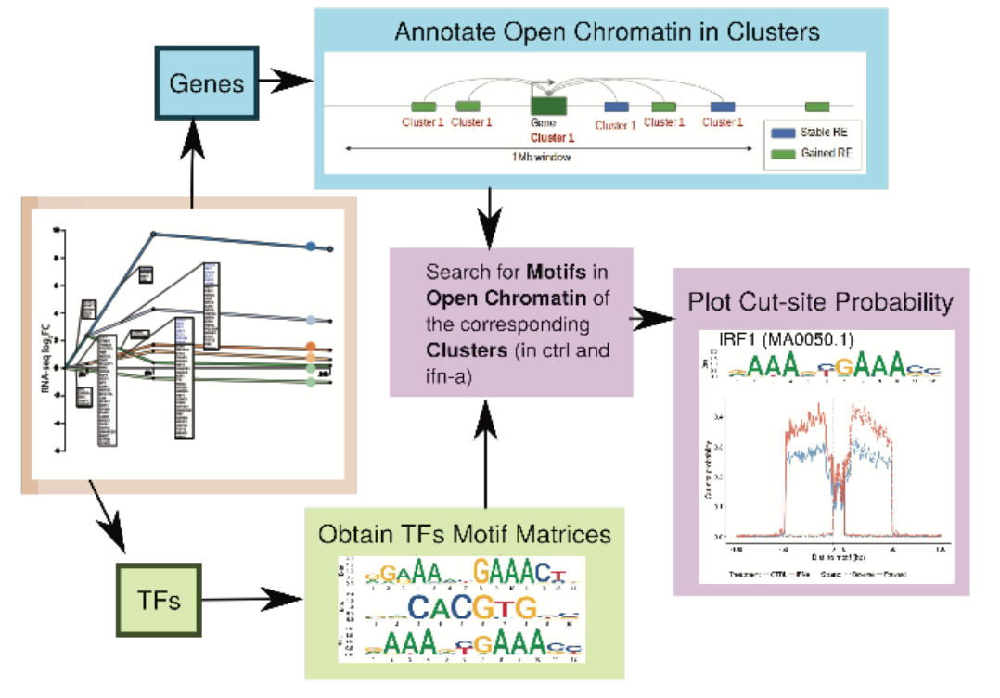
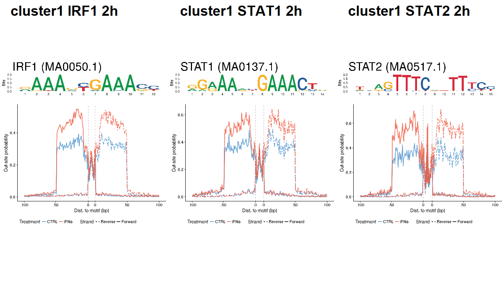
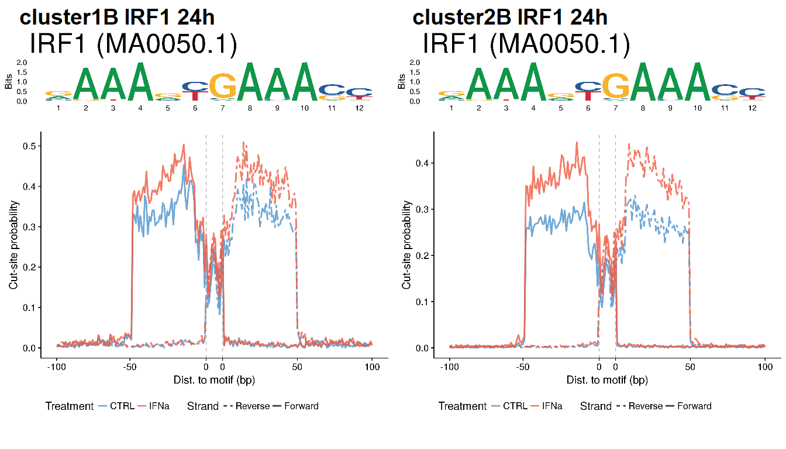

Original publication:
Colli, M.L., Ramos-Rodríguez, M., Nakayasu, E.S. et al. An integrated multi-omics approach identifies the landscape of interferon-α-mediated responses of human pancreatic beta cells. Nat Commun 11, 2584 (2020). https://doi.org/10.1038/s41467-020-16327-0
Contents: Analyses and figures contained in this document correspond to the following figures/sections of the original publication:
| 2 hours | 24 hours |
|---|---|
| Cluster 1 | Cluster 1A |
| Cluster 1B | |
| Cluster 1C | |
| Cluster 2 | Cluster 2A |
| Cluster 2B | |
| Cluster 3 | Cluster 3 |

clusters <- c("cluster1", "cluster2", "cluster3", "cluster1A", "cluster1B", "cluster1C", "cluster2B")
tf <- read.csv("../data/IFNa/clusters_RNA/tf_clusters_ifna.csv",
stringsAsFactors=FALSE)
colnames(tf) <- clusters
genes <- read.csv("../data/IFNa/clusters_RNA/gene_clusters_ifna.csv",
stringsAsFactors=FALSE)
colnames(genes) <- clusters
## Create df for TF
cluster <- c()
for (i in clusters) cluster <- c(cluster, rep(i, nrow(tf[tf[,i]!="",])))
tfs <- c()
for (i in 1:length(clusters)) tfs <- c(tfs, tf[tf[,i]!="",i])
clust.tf <- data.frame("cluster"=cluster,
"TFs"=tfs)
save(clust.tf, file="../data/IFNa/clusters_RNA/tf_clusters_ifna.rda")
## Create df for genes
cluster <- c()
for (i in clusters) cluster <- c(cluster, rep(i, nrow(genes[genes[,i]!="",])))
tfs <- c()
for (i in 1:length(clusters)) tfs <- c(tfs, genes[genes[,i]!="",i])
clust.genes <- data.frame("cluster"=cluster,
"external_gene_name"=tfs)
save(clust.genes, file="../data/IFNa/clusters_RNA/gene_clusters_ifna.rda")
## Obtain coordinates for genes
load("../data/IFNa/RNA/diffAnalysis/res_2h.rda")
coord <- res.df_2h[,c(21:24)]
coord$external_gene_name <- toupper(coord$external_gene_name)
table(clust.genes$external_gene_name %in% coord$external_gene_name)
na <- clust.genes[!(clust.genes$external_gene_name %in% unique(coord$external_gene_name)),]
alt <- getNameFromAlias(na$external_gene_name)
## Replace for symbols
clust.genes$external_gene_name <- as.character(clust.genes$external_gene_name)
clust.genes <- clust.genes[order(clust.genes$external_gene_name),]
alt <- alt[order(alt$alias_symbol),]
for (i in 1:nrow(alt)) {
clust.genes$external_gene_name[clust.genes$external_gene_name==alt$alias_symbol[i]] <- alt$symbol[i]
}
table(clust.genes$external_gene_name %in% coord$external_gene_name)
clust.genes.coord <- dplyr::inner_join(clust.genes, coord)
clust.genes.coord$cluster <- as.character(clust.genes.coord$cluster)
clust.genes.gr <- regioneR::toGRanges(clust.genes.coord[,c(3:5, 1:2)])
save(clust.genes.gr, file="../data/IFNa/clusters_RNA/gene_clusters_ifna_granges.rda")
table(clust.genes.gr$cluster)
## Annotate open chromatin regions to closest gene in corresponding cluster
rm(list=ls())
load("../data/IFNa/clusters_RNA/gene_clusters_ifna_granges.rda")
load("../data/IFNa/ATAC/diffAnalysis/res.2h.rda")
res.2h <- regioneR::toGRanges(res.2h.df[,c(17:19, 1:16)])
load("../data/IFNa/ATAC/diffAnalysis/res.24h.rda")
res.24h <- regioneR::toGRanges(res.24h.df[,c(17:19, 1:16)])
rm(res.24h.df, res.2h.df)
c2 <- c("cluster1", "cluster2", "cluster3") ## clusters at 2h
c24 <- c("cluster3", "cluster1A", "cluster1B", "cluster1C", "cluster2B") ## clusters at 24h
cl.atac.2h <- ChIPseeker::annotatePeak(res.2h, TxDb=clust.genes.gr[clust.genes.gr$cluster %in% c2],
verbose=FALSE)
cl.atac.24h <- ChIPseeker::annotatePeak(res.24h, TxDb=clust.genes.gr[clust.genes.gr$cluster %in% c24],
verbose=FALSE)
## Filter out regions if distanceToTSS > 1Mb
dist <- 1000000
cl.atac.2h <- data.frame(cl.atac.2h)
cl.atac.24h <- data.frame(cl.atac.24h)
cl.atac.2h <- unique(cl.atac.2h[abs(cl.atac.2h$distanceToTSS) <= dist,])
cl.atac.24h <- unique(cl.atac.24h[abs(cl.atac.24h$distanceToTSS) <= dist,])
save(cl.atac.2h, file=file.path(out_dir, "atac_clusters_ifna_2h.rda"))
save(cl.atac.24h, file=file.path(out_dir, "atac_clusters_ifna_24h.rda"))The number of regions annotated to each RNA cluster is:
load(file.path(out_dir, "atac_clusters_ifna_2h.rda"))
load(file.path(out_dir, "atac_clusters_ifna_24h.rda"))
cl.atac.2h.gr <- regioneR::toGRanges(cl.atac.2h[,-c(4:5)])
cl.atac.24h.gr <- regioneR::toGRanges(cl.atac.24h[,-c(4:5)])
knitr::kable(table(cl.atac.2h$cluster, cl.atac.2h$type),
caption="OCRs at 2h annotated to each RNA-seq cluster.")| gained | stable | |
|---|---|---|
| cluster1 | 419 | 24609 |
| cluster2 | 947 | 55003 |
| cluster3 | 146 | 14001 |
knitr::kable(table(cl.atac.24h$cluster, cl.atac.24h$type),
caption="OCRs at 24h annotated to each RNA-seq cluster.")| gained | lost | stable | |
|---|---|---|---|
| cluster1A | 30 | 1 | 4991 |
| cluster1B | 65 | 5 | 12765 |
| cluster1C | 36 | 0 | 11738 |
| cluster2B | 97 | 1 | 28204 |
| cluster3 | 27 | 1 | 15537 |
The code used for calculating the footprints of all TFs outputed by the DREM model was ran using the following Rscript:
Rscript code/IFNa_TF_footprint.RWarning: Currently, TFBSTools is not working as expected…
library(TFBSTools)
library(ggseqlogo)
## Load data ---------------------------------
load("../data/IFNa/clusters_RNA/tf_clusters_ifna.rda")
clust.tf$cluster <- as.character(clust.tf$cluster)
clust.tf$TFs <- as.character(clust.tf$TFs)
opts <- list()
opts[["species"]] <- 9606
opts[["matrixtype"]] <- "PWM"
opts[["all_versions"]] <- TRUE
matJaspar <- getMatrixSet(JASPAR2016::JASPAR2016, opts)
## Load matrix FOXA2
mot.f <- read.delim("../data/IFNa/TF_motifs/fox2.motif", header=FALSE)
mot.f <- t(mot.f)
rownames(mot.f) <- c("A", "C", "G", "T")
mot <- mot.f*1000
pfm.foxa2 <- PFMatrix(ID="Human-Islets-FOXA2",
name="FOXA2",
profileMatrix=mot)
## Obtain list of TF and TF IDs
tf.id <- data.frame("tf"=unique(clust.tf$TFs),
"id"=NA,
stringsAsFactors=FALSE)
tf.id <- rbind(tf.id, c("FOXA2", "HumanIslet-FOXA2"))
sel <- c("STAT1", "STAT2", "IRF1")
tf.id <- tf.id[tf.id$tf %in% sel,]
for (i in unique(clust.tf$TFs)) {
mot <- matJaspar[grep(i, name(matJaspar))]
if (length(mot) > 0) {
name <- ID(mot)[[1]]
tf.id$id[tf.id$tf==i] <- name
} else {
next
}
}
tf.id <- tf.id[!is.na(tf.id$id),]
##------------------------------------------------
## 2 hours
##------------------------------------------------
## Plot footprints (manually)
# dir.create("Figs_2h/", F)
## Set labels
upstream=100
downstream=100
for (i in c2) {
for (j in unique(clust.tf$TFs[clust.tf$cluster==i])) {
if (!(j %in% tf.id$tf)) next
else {
v <- matJaspar[grep(tf.id$id[tf.id$tf==j], ID(matJaspar))]
if (length(v)==0) {
mot <- pfm.foxa2
} else {
mot <- Matrix(matJaspar[grep(tf.id$id[tf.id$tf==j], ID(matJaspar))][[1]])
}
load(file.path(out_dir, paste0("footprint_", i, "_", j, "_2h.rda")))
ctrl$Treatment <- "CTRL"
ifn$Treatment <- "IFNa"
df <- rbind(ctrl, ifn)
## Set breaks and labels
nmotif = ncol(mot)
breaks <- c(min(ctrl$Position), (upstream+1), (upstream+nmotif), max(ctrl$Position))
breaks <- c(breaks, round(breaks[2]/2, 0), round((breaks[4]-breaks[3])/2 + breaks[3], 0))
breaks <- sort(breaks)
labels <- c(paste0("-", upstream),
paste0("-", upstream/2),
"0", "0",
paste(downstream/2),
paste(downstream))
xlab = "Dist. to motif (bp)"
ylab = "Cut-site probability"
profile <- ggplot(df, aes(Position, Probability)) +
geom_line(aes(color=Treatment, lty=Strand), lwd=1, alpha=0.8) +
scale_linetype_manual(values=c("Forward"=1, "Reverse"=6)) +
scale_color_manual(values=c("CTRL"="steelblue3", "IFNa"="tomato2")) +
geom_vline(xintercept=breaks[3], lty=2, color="dark grey") +
geom_vline(xintercept=breaks[4], lty=2, color="dark grey") +
theme(legend.position="bottom") +
scale_x_continuous(breaks=breaks,
labels=labels) +
xlab(xlab) + ylab(ylab)
logo <- ggseqlogo(mot, seq_type="dna") +
ggtitle(paste0(j, " (", ID(matJaspar[grep(tf.id$id[tf.id$tf==j], ID(matJaspar))][[1]]), ")")) +
theme(plot.title = element_text(size=35))
final <- plot_grid(logo, profile, ncol=1, rel_heights=c(1,3))
}
}
}
final
##-----------------------------------------------------
## 24 hours
##-----------------------------------------------------
# dir.create("Figs_24h/", F)
for (i in c24) {
for (j in unique(clust.tf$TFs[clust.tf$cluster==i])) {
if (!(j %in% tf.id$tf)) next
else {
v <- matJaspar[grep(tf.id$id[tf.id$tf==j], ID(matJaspar))]
if (length(v)==0) {
mot <- pfm.foxa2
} else {
mot <- Matrix(matJaspar[grep(tf.id$id[tf.id$tf==j], ID(matJaspar))][[1]])
}
load(file.path(out_dir, paste0("footprint_", i, "_", j, "_24h.rda")))
ctrl$Treatment <- "CTRL"
ifn$Treatment <- "IFNa"
df <- rbind(ctrl, ifn)
## Set breaks and labels
nmotif = ncol(mot)
breaks <- c(min(ctrl$Position), (upstream+1), (upstream+nmotif), max(ctrl$Position))
breaks <- c(breaks, round(breaks[2]/2, 0), round((breaks[4]-breaks[3])/2 + breaks[3], 0))
breaks <- sort(breaks)
labels <- c(paste0("-", upstream),
paste0("-", upstream/2),
"0", "0",
paste(downstream/2),
paste(downstream))
xlab = "Dist. to motif (bp)"
ylab = "Cut-site probability"
profile <- ggplot(df, aes(Position, Probability)) +
geom_line(aes(color=Treatment, lty=Strand), lwd=1, alpha=0.8) +
scale_linetype_manual(values=c("Forward"=1, "Reverse"=6)) +
scale_color_manual(values=c("CTRL"="steelblue3", "IFNa"="tomato2")) +
geom_vline(xintercept=breaks[3], lty=2, color="dark grey") +
geom_vline(xintercept=breaks[4], lty=2, color="dark grey") +
theme(legend.position="bottom") +
scale_x_continuous(breaks=breaks,
labels=labels) +
xlab(xlab) + ylab(ylab)
logo <- ggseqlogo(mot, seq_type="dna") +
ggtitle(paste0(j, " (", ID(matJaspar[grep(tf.id$id[tf.id$tf==j], ID(matJaspar))][[1]]), ")")) +
theme(plot.title = element_text(size=35))
final <- plot_grid(logo, profile, ncol=1, rel_heights=c(1,3))
}
}
}
final
sessionInfo()R version 4.0.2 (2020-06-22)
Platform: x86_64-w64-mingw32/x64 (64-bit)
Running under: Windows 10 x64 (build 18362)
Matrix products: default
locale:
[1] LC_COLLATE=Spanish_Spain.1252 LC_CTYPE=Spanish_Spain.1252
[3] LC_MONETARY=Spanish_Spain.1252 LC_NUMERIC=C
[5] LC_TIME=Spanish_Spain.1252
attached base packages:
[1] grid parallel stats4 stats graphics grDevices utils
[8] datasets methods base
other attached packages:
[1] DESeq2_1.29.7 SummarizedExperiment_1.19.6
[3] DelayedArray_0.15.7 matrixStats_0.56.0
[5] Matrix_1.2-18 Biobase_2.49.0
[7] ComplexHeatmap_2.5.3 dplyr_1.0.0
[9] kableExtra_1.1.0 cowplot_1.0.0
[11] ggplot2_3.3.2 GenomicRanges_1.41.5
[13] GenomeInfoDb_1.25.8 IRanges_2.23.10
[15] S4Vectors_0.27.12 BiocGenerics_0.35.4
[17] workflowr_1.6.2
loaded via a namespace (and not attached):
[1] bitops_1.0-6 fs_1.4.2 bit64_0.9-7.1
[4] webshot_0.5.2 RColorBrewer_1.1-2 httr_1.4.2
[7] rprojroot_1.3-2 tools_4.0.0 backports_1.1.8
[10] R6_2.4.1 DBI_1.1.0 colorspace_1.4-1
[13] GetoptLong_1.0.2 withr_2.2.0 tidyselect_1.1.0
[16] bit_1.1-15.2 compiler_4.0.0 git2r_0.27.1
[19] rvest_0.3.6 xml2_1.3.2 labeling_0.3
[22] rtracklayer_1.49.4 bookdown_0.20 scales_1.1.1
[25] readr_1.3.1 genefilter_1.71.0 Rsamtools_2.5.3
[28] stringr_1.4.0 digest_0.6.25 rmarkdown_2.3
[31] XVector_0.29.3 pkgconfig_2.0.3 htmltools_0.5.0
[34] highr_0.8 BSgenome_1.57.5 regioneR_1.21.1
[37] rlang_0.4.7 GlobalOptions_0.1.2 rstudioapi_0.11
[40] RSQLite_2.2.0 farver_2.0.3 shape_1.4.4
[43] generics_0.0.2 BiocParallel_1.23.2 RCurl_1.98-1.2
[46] magrittr_1.5 GenomeInfoDbData_1.2.3 Rcpp_1.0.5
[49] munsell_0.5.0 lifecycle_0.2.0 stringi_1.4.6
[52] yaml_2.2.1 zlibbioc_1.35.0 blob_1.2.1
[55] promises_1.1.1 crayon_1.3.4 lattice_0.20-41
[58] Biostrings_2.57.2 splines_4.0.0 annotate_1.67.0
[61] circlize_0.4.10 hms_0.5.3 magick_2.4.0
[64] locfit_1.5-9.4 knitr_1.29 pillar_1.4.6
[67] rjson_0.2.20 geneplotter_1.67.0 XML_3.99-0.5
[70] glue_1.4.1 evaluate_0.14 png_0.1-7
[73] vctrs_0.3.2 httpuv_1.5.4 gtable_0.3.0
[76] purrr_0.3.4 clue_0.3-57 xfun_0.16
[79] xtable_1.8-4 later_1.1.0.1 survival_3.2-3
[82] viridisLite_0.3.0 tibble_3.0.3 GenomicAlignments_1.25.3
[85] AnnotationDbi_1.51.3 memoise_1.1.0 cluster_2.1.0
[88] ellipsis_0.3.1